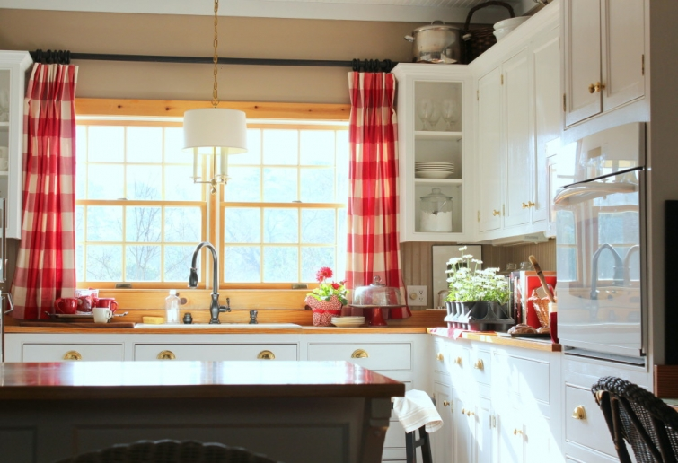

.png)
.PNG)
.PNG)
.PNG)
.PNG)
.PNG)
.JPG)
.JPG)
.PNG)
.PNG)



Here is my view while I am having a cup of decaf coffee this morning. (Yes, those are daisies and cinnamon rolls on the counter. 🙂 ) My brain is thinking about what I need to get done today (planting those daisies!) Is your day filled with things from a to-do list on this getting-closer-to-spring weekend? If not, perhaps you will have time for a little reading. I cannot believe I totally forgot to tell you about this book the other day!

Classical Invention: The Architecture of John B. Murray
Yes, it is by John B. Murray, and it is filled to the brim with eye candy. So many beautiful rooms! I also wanted to tell you about another book of inspiring spaces (since you have so much time for reading this weekend! 🙂 )…

(Amazon affiliate links)
This one is by Mary Carol Garrity, the owner of the wonderful Kansas City shop, Nell Hill’s. She and her shop have been featured on Traditional Home magazine’s website. (She’s a queen of tablescapes!)
You might also like to read about how she downsized to her lake house from a huge home… a home she opened for tours several times each year. (I can’t even imagine the amount of work that required. Goodness!)
While you are doing all this reading, perhaps you need a comfy little reading area. 🙂
I know the big thing today is styling your bookshelves with a variety of accessories, but if you are like us with sooooo many books, you actually need your bookshelves for …books! Recognize this next cozy corner?
betweennapsonthporch.net (from the movie The Holiday)
No bookshelves in this next one, but I think you will enjoy seeing this home. It is cozy, pretty, and the kitchen is perfection! (Definitely go look at it. 🙂 )
Last fall we took a peek at the work of Barbara Westbrook. She has another online post out for her Workbook. It is good reading about styling vignettes.
And just the other day, I found some photos from Garden and Gun of her personal home.
It is located in an interesting area of Atlanta called Whittier Mill Village – a neighborhood of which I had never heard. It was once an industrial area with a mill on the Chattahoochee River, and it is now designated as one of only 17 historic districts in the city. You can read about it here and here. I believe Barbara Westbrook became interested in the area when she was visiting the home of Kim Winkler – another designer who lives there. Kim’s home has been featured in Traditional Home magazine and you can see more of it here.
traditionalhome.com photo by Emily Followill
While you are doing all this reading today, you might want a slice of something sweet to enjoy. If you have any leftover Girl Scout cookies (well who actually has leftovers of those??) you can make this yummy Samoa Cookie Ice Cream Cake…mmmm.
And if you are really wanting to use up those cookies, here are 40 Samoa inspired recipes.
When you finish all the reading that has been assigned by this teacher, you can go out and enjoy the new Disney movie, McFarland.


.PNG)
Another great post of such gorgeous inspiration…must say I love the room of the “garden and gun” creator….Love that magazine…
———————————————————————
Thank you for reading Shirley. I am glad you could find inspiration in the photos today. Love Garden and Gun too! It always has such a wide variety of interesting articles.
Kelly
Kelly, you’re truly an inspiration. Thanks for sharing all the beautiful pics. I hope you’re having a great weekend.
——————————————————————–
I am so glad you enjoyed all the photos Mary. I hope your weekend was great!
Kelly
Kelly,
I’m working from a long ‘to do’ list this weekend but have made enough progress to read this, and I’m so glad I did! (as if I’d miss one of your posts!). I love the Nell Hill books, I own 3. I just added this one to the wish list. I’m with you, I can’t style too many of the shelves in our family room book case because we have a lot of books! I’m saving this post so I can go back and check out the links you’ve provided. For now I’ve got to frost a Barefoot Contessa Chocolate Ganache cake for a dinner we’re going to this evening.
Enjoy your Sunday.
xo,
Karen
———————————————————————-
You must be a big fan to own 3 Nell Hill’s books. Your chocolate ganache cake sounds divine!!! Oh my goodness, just the title makes my mouth water for it. I know that had to turn out delicious!
Kelly
Hi Kelly, When I read that you were planning on planting daisies today I really questioned why we are living in Massachusetts! Unfortunately it’s still frigid with a couple of feet of snow here! I am so ready for Spring and warm weather and doing some planting myself!
———————————————————————
Spring is coming…soon I hope for everyone. If it makes you feel any better, I did not get them planted, and they are still sitting in the kitchen. Hope to get them out in the next day, but we always get a cold snap right before Easter.
Kelly
Kelly,
I have shopped at Nell Hill’s in Kansas City. I have her book Style at Home. She came to visit and sign books at a local shop I used to work at on weekend’s. I even have some of Mary Carol Garrity’s merchandise. I love her style and taste in home goods. Thanks for all of your weekend inspiration. I will be baking and catching up on housework this weekend. It is snowing buckets here in Missouri this weekend and pretty much everything has been canceled, which is always a blessing in disguise. Thanks for sharing! Take care.
———————————————————————
Dawn, we are all jealous of you! You have shopped in that wonderful store? And you have met her and have some of those wonderful accessories! Wow! Hope you had a productive weekend. 🙂
Kelly
Kelly, I love all this eye candy; you’re helping me to stay motivated in sprucing up my place. I’ve got sooo much to do here–replacing windows, roof, and painting inside and out. I’m a single with no close family within 500 miles. My son lives in the area but since he’s 2nd engineer w/Merchant Marines he’s gone for up to 75-90 days at a time. So your blog encourages me; please keep it up, friend.
Weather here in northern CA has been exceptionally mild. With God’s blessing we may get some rain today, but especially helpful if it snows in Tahoe. (Good snow pack melts in summer and valley farmers have H2O for irrigation.) I bought a 6-pack of tomatoes on Thursday and hope to get them planted by end of this week.
Just me looking forward to some yummy tomato sandwiches.
—————————————————————-
Glad I could help you stay motivated. 🙂 It sounds like you have quite a to-do list! I hope you got some rain and that Tahoe got snow for your sake. Planting tomatoes…wow! Makes me look forward to summer!
Kelly
Really? Daisy planting? Oh, the southern life…..it is sunny here, but very cold. No planting here, unless I was making a terrarium. This weekend brought a jaunt up to a lake community in Wisconsin, to check out a few summer homes. What looked a little dreamy in the realty pictures, took us to, seeing possible property concerns and updates. It is always an eye opening moment to start evaluating and examining older homes. What should be a relaxing getaway, can turn into future more sweat equity and added costs to the purchase price. I will keep dreaming and hunting though, you never know. Love your post as usual, and will have to investigate the milk and honey home.com site. Looks drool worthy. Thanks Kelly.
————————————————————————
Your terrarium comment made me laugh out loud Debra. 🙂 I hope you find a home you love and one that allows you to relax – and not work yourself (and your bank account) to death.
Kelly
I love Nell Hill’s new house — better than her old one, actually! The room that you pictured, with all of the books, is probably my favorite. It’s funny that you mention about bookshelves being for books — I just wrote about that on my blog. I love the look of styled shelves, but where am I supposed to put my books? LOL! Today, I’m finally going to get out of the house after being pretty much stuck inside for a few weeks. I love the snow days, but I’m ready for a break!
——————————————————————–
I thought the same thing about Mary Carol’s house Kim! How funny. 🙂 I am glad the weather gave you a break to enjoy being out of the house for awhile. Hope spring comes your way soon!
Kelly
Thanks for showing us the inside of all these houses. So pretty. I don’t think I’ve seen that angle of the library from the movie The Holiday. I love all the shutters on the inside of the windows too. I’m thinking about doing that. Can’t wait to watch McFarland. My son was running cross country and it looked like fun. I kept thinking I wished there were a coach for adults. Then I got my community center magazine in the mail and they had a coach training people to run a 5K. So after the 5K, I kept him on as a coach. I’ve been running since September 2014. It’s just recently that I feel I’m actually a runner. Those first couple of months just felt like I was learning how to breathe. Can’t wait to go watch this and feel inspired.
—————————————————————–
If your son ran cross country than you most definitely will love McFarland. 🙂 Congrats to you on running! Learning to breathe…that is just what I would have to do if I started that!
Kelly
Love your blog. Daisy planting now? I live in Atlanta and did not know it was safe to plant at this time of year. Mind if I ask where you bought them. Have a great weekend!
——————————————————————-
I wanted to get them in the ground, but did not find the time last weekend, so they still sit in the kitchen as I type this. I planned to put them in the herb garden where I could easily cover them if we get another frost. I am further south than you (by several hours) and I got them at our local Home Depot. They also had geraniums – which do love the cooler temps, but I restrained myself from getting them. 🙂
Kelly
Hi Kelly ~ the sun is out this a.m. but it’s breezy and chilly so I may not work outside as planned. Hopefully hubby will continue to build the bookshelves for the Spare Oom. Then this evening we are catching to ferry to the city to meet a friend for dinner. His wife passed away a couple of weeks ago from cancer. We met them as newlyweds in 1973 and haven’t lived by them in years but they remain dear to us. He is taking some time to travel a bit before facing being home alone in Texas. We spent last evening, the beginning of the weekend, with our kids and grandkids!
———————————————————————
It sounds like you had a wonderful weekend full of special times. I know your friend appreciated your friendship and your dinner with him. I am sorry that he has lost his wife to cancer. Hope your husband made good progress on the bookshelves!
Kelly
Oh, I love your selections today. After looking at his website from your last posting, the John B. Murray book is sure to be fabulous. I love Nell Hill’s styling, and have enjoyed her previous book (maybe more than one?). I loved that the must-haves in their small lake house were room for books and art and dishes. I can so relate! We sold our bigger (though not large) home of 26 years last year and moved to our mountain vacation cabin. The cabin has no storage to speak of, no walk-in attic or basement like my old house, no carport or garage, one less bedroom, and all the rooms are smaller. Even though our old home had been built in the 1920’s and the closets were not large, they were bigger than those at the cabin. So, we purged like crazy, gave away a ton of stuff and sold a bit. I donated hundreds of books, but had hundreds left. I kept the nice antiques and meaningful stuff which has mostly found a place at the cabin or at our children’s homes (though they didn’t take much at all), but we also had to rent a storage unit that is mostly full of books! I find myself missing ones when I go looking on the shelves I do have. So, we’re hoping to do an addition and close in a back porch, but high on the list is storage for books! I’m also looking at ways of re-designing our tiny kitchen to make room for more storage (yes, I have my mother’s and grandmother’s dishes in storage, too) and generally more functional. Fun to think about, dread actually having it done and the disruption that ensues. Funny, that book-lined sitting room from the movie The Holiday is one of my all time faves. That’s what I’d like my closed-in back porch to look like (and our cabin door looks like the one in the photo), but I need a mudroom, too. Sigh. Of course, I love that whole cottage from the set. My husband made orange and cranberry scones for breakfast this morning. Aren’t I lucky?
———————————————————————
Yes, you are lucky! And I love that you have so many books (even if many are in storage!) You have definitely done some Major downsizing. I think an addition to have more room for storage is needed. Hope you get that project going soon. 🙂
Kelly
Snow on the ground, but sky full of sunshine. That’s a good day winter wise in Ohio. Too bad heavy snow storm predicted for us tomorrow. Love Barbara Westbrook’s desk. Yes, I want to see McFarland and Disney’s Cinderella. Hopefully, finishing Kate Morton’s The Forgotten Garden today.
——————————————————————–
If there is going to be snow, I hope you have many sunny skies to go with it. Hopefully spring will be headed your way soon. You all have had some serious winter weather this year! My son will be in Connecticut next year, and I hope the weather is much milder then. 🙂
Movies and books…sounds like a great weekend!
Kelly
Such gorgeous rooms! I’m a huge fan of Mary Carol Garrity and must instantly look for this book. Hope you have a wonderful weekend. I’ll be listening to two writers (Sena Jeter Naslund and Frye Galliard) in a “writer’s conversation” at our bookstore, then I’ll be helping cook and serve dinner for 130 teens at church! Fun Saturdays!
——————————————————————–
Leslie Anne, I think this is her best book yet. What a weekend you had in store! The bookstore talk had to be fun…not sure if cooking for 130 teenagers would fall in that same category though! 🙂
Kelly
Thanks for all the suggestions! It’s really cold here…so snuggling in will be the order of the day, and then a gathering of friends for a birthday celebration. I’d much rather be planting daisies! 😉
———————————————————————
Hope some springlike temperatures come to your area soon, and I hope your birthday celebration was a fun one, Donnamae!
Kelly
Kelly,
I am a faithful reader, but I’m afraid I haven’t commented in such a long time. I blame Feedly. ; ) I enjoy your posts so much and especially appreciate today’s book recommendations as well as all your project ideas, recipes, and entertaining ideas. Hope your weekend is fun and restful!
———————————————————————-
Thank you Paula. I totally understand the not leaving comments. I can’t even find the time to make it to all the blogs I love to read! (So glad you are blogging again. :)) Working, taking care of a family, and blogging just fill in all the waking hours; don’t they? I am so glad you are enjoying the posts here. Our weekend has been super fun here! (details coming next week. 🙂 )
Kelly
Snowing here in Oklahoma. I am in for the weekend. Any suggestions for a good book I can download on my Nook. Doesn’t seem to be any good movies on TV today.
———————————————————————–
Have you read The Friday Night Knitting Club or Comfort Food, both by Kate Jacobs?
Kelly